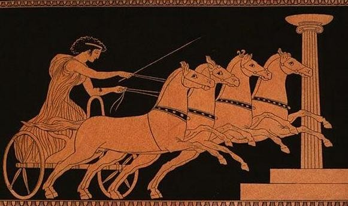

Starożytne igrzyska olimpijskie, które odbywały się w Olimpii, Grecja, co cztery lata, były
wielkim wydarzeniem kulturowym i sportowym. Ich początki sięgają roku 776 p.n.e. Ceremonie otwarcia
rozpoczynało składanie przysięgi przed posągiem Zeusa, a zwycięzcy otrzymywali laur olimpijski, co przynosiło
im sławę i hołd miast. Oszustwa karano surowo, a sława zdobywana przez zwycięzców przynosiła chwałę nie tylko im,
lecz również ich rodzinom i miastom. Zawody obejmowały różnorodne dyscypliny, takie jak biegi, zapasy, walki na
pięści czy wyścigi rydwanów, a uczestniczyli w nich jedynie wolni mężczyźni. Oglądanie igrzysk przez kobiety było
surowo zabronione pod groźbą kary śmierci. Igrzyska miały także wymiar religijny, odbywając się ku czci boga Zeusa.
To wydarzenie jednoczyło społeczności, a triumfujący sportowcy stawali się bohaterami swoich czasów.

Nowożytne igrzyska olimpijskie
Nowożytne letnie igrzyska olimpijskie rozgrywane są od 1896 r. (Ateny), a zimowe od 1924 r. (Chamonix). Nawiązują one
do głębokich tradycji antycznych igrzysk olimpijskich. Zdecydowana większość zawodników traktuje igrzyska olimpijskie
jako najważniejsze zawody sportowe, a złoty medal olimpijski, jako najcenniejsze i najbardziej wyczekiwane trofeum.
Wyjątkiem od wskazanej reguły są sportowcy uprawiający m.in. tenis, kolarstwo czy piłkę nożną, gdyż w tych dyscyplinach
odbywa się wiele prestiżowych zawodów, turniejów i rozgrywek. Międzynarodowe federacje wskazanych dyscyplin sportowych
starają się jednak sukcesywnie wpływać na podnoszenie rangi konkursów olimpijskich wśród swoich zawodników.